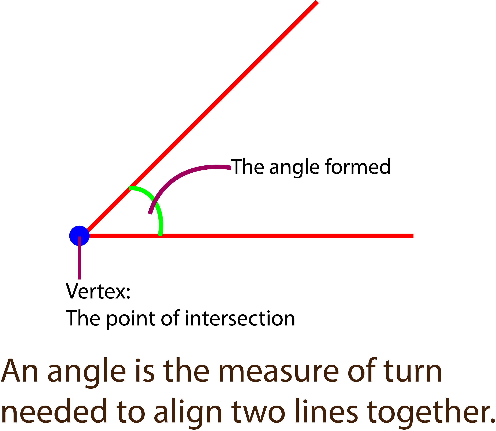

Angles are formed when two or more lines or line segments meet or intersect at a common point called vertex. The measure of the angle is the amount of rotation or turn around the fixed point.

It can also be described as the amount of rotation or turn needed to align two lines sharing the same vertex together, or how much one line will need to turn in order to be inline with the other line.
The unit of measurement for angles are degrees (°), radians or gradians. In our study, we will only be using degrees (°) to measure angles.
Angles play a fundamental role in life and are used to describe shapes, positions and movements of objects. They can be classified into different types depending on their measure.
The types of angles we have are:
1. Acute angles
2. Right angles
3. Obtuse angles
4. Straight angles
5. Reflex angles
Acute angles
Angles that are less than 90° are called acute angles. Here are some examples of acute angles:
1. 30 degrees (30°)
2. 45 degrees (45°)
3. 60 degrees (60°)
4. 75 degrees (75°)
Right angles
Angles that are exactly 90 degrees (90°) are called right angles. They are formed when two lines meet to form a perfect "L" shape. Any two lines that join to form a right angle are called perpendicular lines.
Example of right angles are the corner of rooms and buildings, such as your classroom. They can be found in square and rectangular shapes.
Obtuse angles
Obtuse angles are angles that are wider than right angles but less than straight angles. In other words, they are more than 90° but less than 180°.
Here are some examples of obtuse angles:
1. 120 degrees (120°)
2. 135 degrees (135°)
3. 150 degrees (150°)
4. 165 degrees (165°)
Straight angles
Straight angles are also known as straight lines, and are angles that are 180° in measure. They are formed when two lines meet at 180°, forming a straight line.
Every straight line can be said to have an angle of 180°. Examples of straight lines are edges of tables, straight roads etc.
Reflex angles
Angles that are wider than straight angles are called reflex angles. That is, they are greater than 180° but less than 360°. They are formed when a line is folded or bent back upon itself, making it greater wider than straight lines but less than a full circle.
Here are some examples of reflex angles:
1. 210 degrees (210°)
2. 225 degrees (225°)
3. 240 degrees (240°)
4. 270 degrees (270°)
In our next lesson, we will learn how to draw these angles using the protractor.